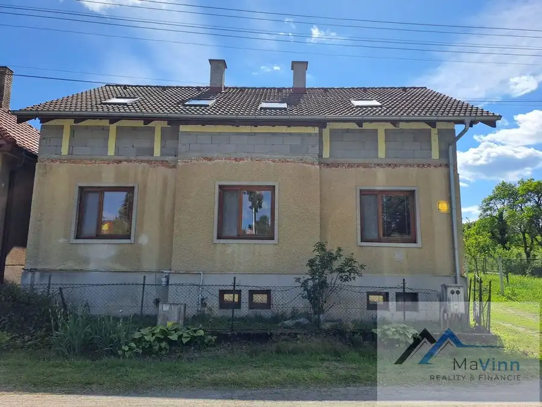
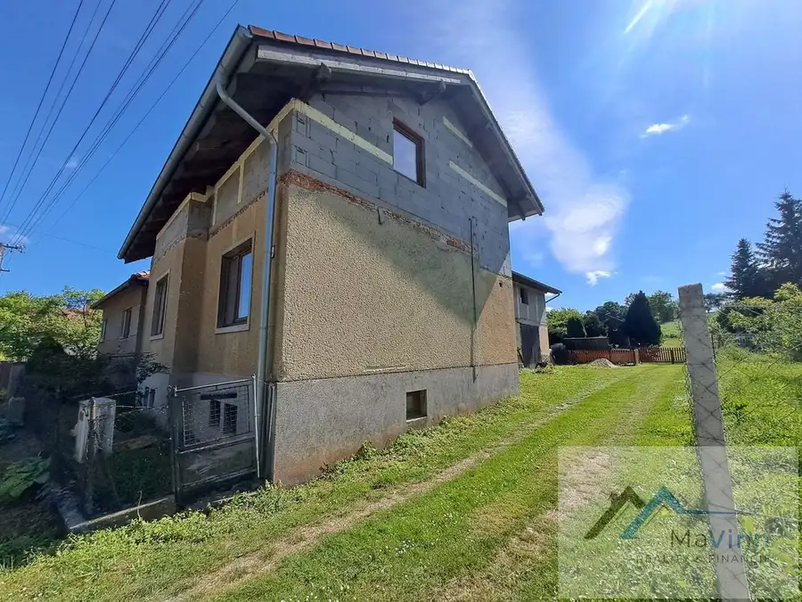
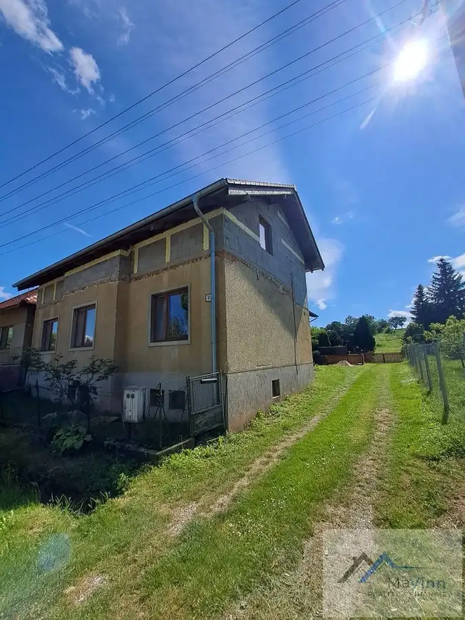
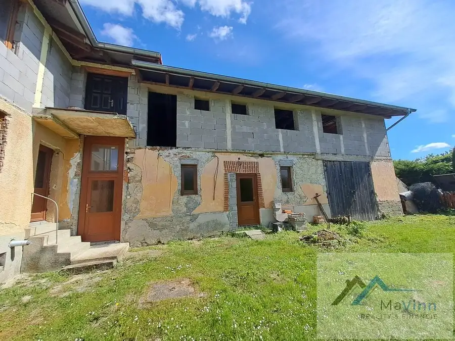
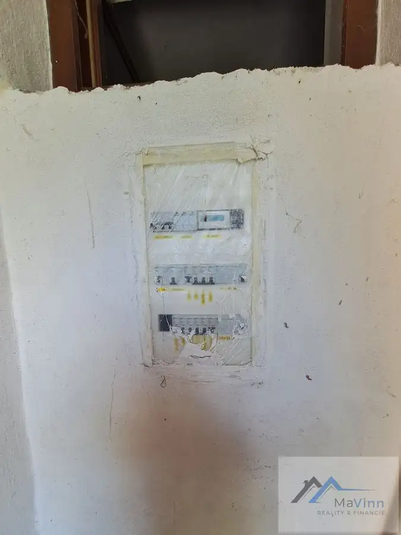
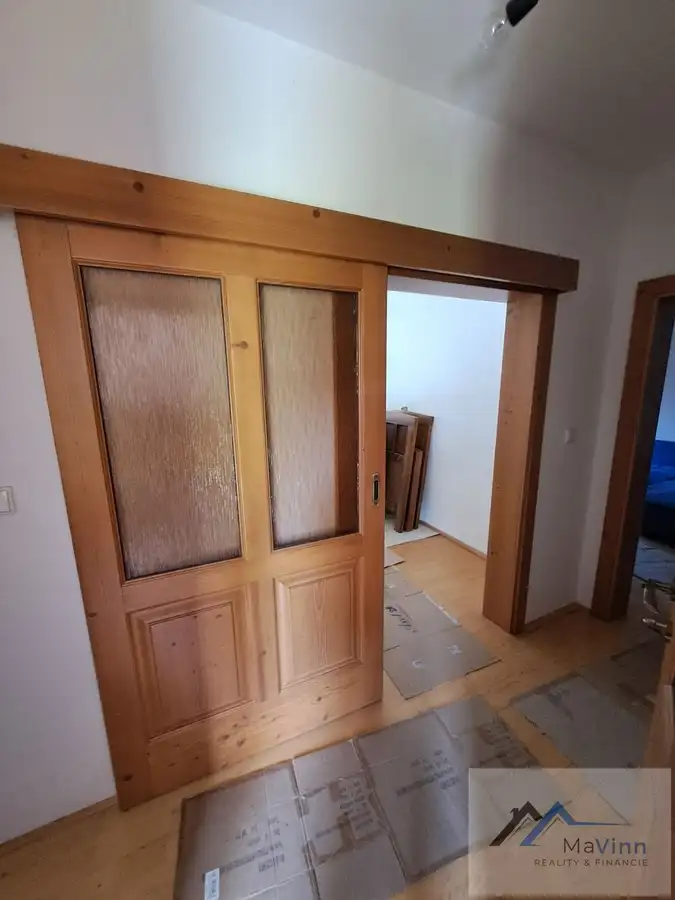
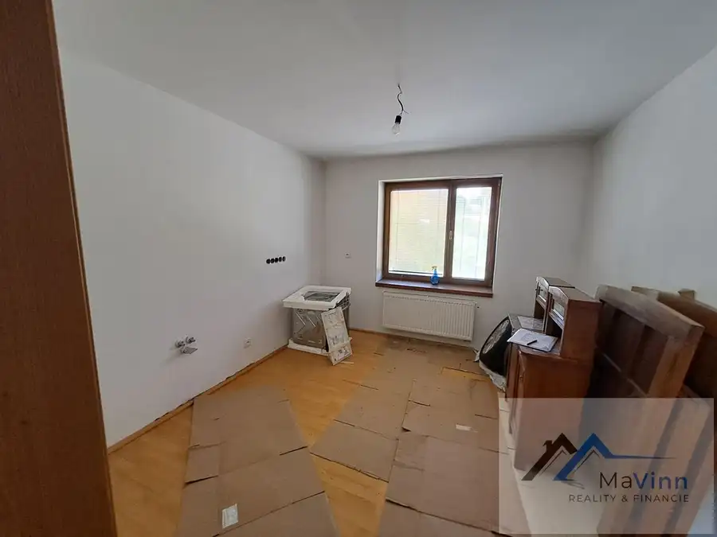

Znížená cena! Dom na predaj Otrhánky
Otrhánky







- Plocha290 m²
- StavČiastočná rekonštrukcia
- VlastníctvoOsobné
O nehnuteľnosti
MaVinn realitná spoločnosť ponúka EXKLUZÍVNE na predaj veľký dvojpodlažný rodinný dom v obci Otrhánky spolu so slnečným pozemkom o rozlohe 1055m².Nehnuteľnosť je postavená kombináciou kameňa, pálenej tehly a kvádrou pred cca 80timi rokmi, má dve obytné podlažia, suterén a garáž. Zastavaná plocha domu je 344 m² a úžitková plocha domu je 290 m².Prvé obytné podlažie tvorí: vstupná chodba, 2 samostatné miestnosti, kuchyňa, kúpeľňa s WC.Druhé podlažie tvorí: zatiaľ jedna veľká miestnosť ktorá sa dá rozdeliť na ďalšiu bytovú jednotku so samostatným vchodom.Nehnuteľnosť je napojená na všetky inžinierske siete: verejný vodovod, elektriku a plyn. Kúrenie je zabezpečené prostredníctvom plynového kotla. Odpad je riešený žumpou. Na pozemku sa nachádza aj vlastná studňa.Dom prešiel rekonštrukciou pre 3 rokmi: nová strecha, ríny, drevené euro-okná, vchodové dvere, drevené podlahy, nový plynový kotol, nové rozvody elektriny, vody, stierky, nove radiátory, zníženie stropov, 2x solárny panel na ohrev vody, strešné okná. Veľké priestory domu ponúkajú pre budúceho majiteľa komfortné bývanie, viac generačné bývanie, prípadne bývanie s možnosťou priestorov pre firmu.Krásna, veľká slnečná záhrada ponúka možnosť relaxu, záhradkárčenie, poprípade možnosti pre realizáciu domáceho majstra. Nehnuteľnosť má spoločný dvor čo však nebráni k riadnemu užívaniu a súkromiu.Obec Otrhánky je vzdialená 6,2km od Bánoviec nad Bebravou, 32km od Trenčína a 153km od hlavného mesta Bratislavy. Pozemok je bez tiarch a ihneď voľný.Výhodou tejto nehnuteľnosti je možnosť okamžitého nasťahovania, prípadne ju môžete využiť aj na podnikateľské účely nakoľko veľkosť domu umožňuje zriadenie komfortného bývania a časť priestoru je možné využiť aj na zriadenie vlastného podnikania alebo dobudovanie a prenájom ďalšej bytovej jednotky.V prípade financovania kúpy nehnuteľnosti prostredníctvom hypotéky Vám s vybavením hypotéky rada pomôžem. Kúpna cena zahŕňa komplet právny, hypotekárny servis a celý kúpno-predajný proces.V prípade záujmu o bližšie informácie a obhliadku tejto nehnuteľnosti volajte:Daniela Bronišovárealitný poradca0914700782mail: bronisova@mavinn.skwww.mavinn.sk
Parametre
- Druh
- Rodinný dom
- Druh domu
- Klasický dom
- Dátum zverejnenia
- 08. 10. 2025
- Energetický certifikát budovy
- nie je
- Plocha pozemku
- 1055 m²
- Počet nadzemných podlaží
- 1
- Príprava teplej vody
- El. akumulačný boiler
- Prístupová komunikácia
- Asfaltová
- Rok poslednej rekonštrukcie
- 2022
- Rok výstavby
- 1944
- Stav nehnuteľnosti
- Čiastočná rekonštrukcia
- Terén pozemku
- Rovinatý
- Typ
- Predaj
- Typ konštrukcie
- Tehlová, Panelová, Kamenná
- Vlastníctvo
- Osobné
- Vykurovanie
- Ústredné
- Zastavaná plocha
- 344 m²
- Zdroj tepla
- Zemný plyn
- Úžitková plocha
- 290 m²